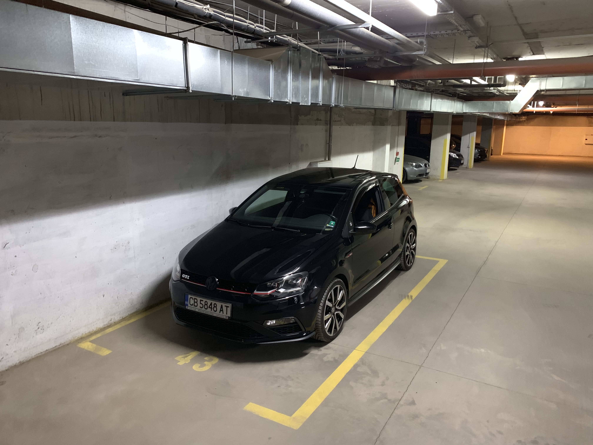
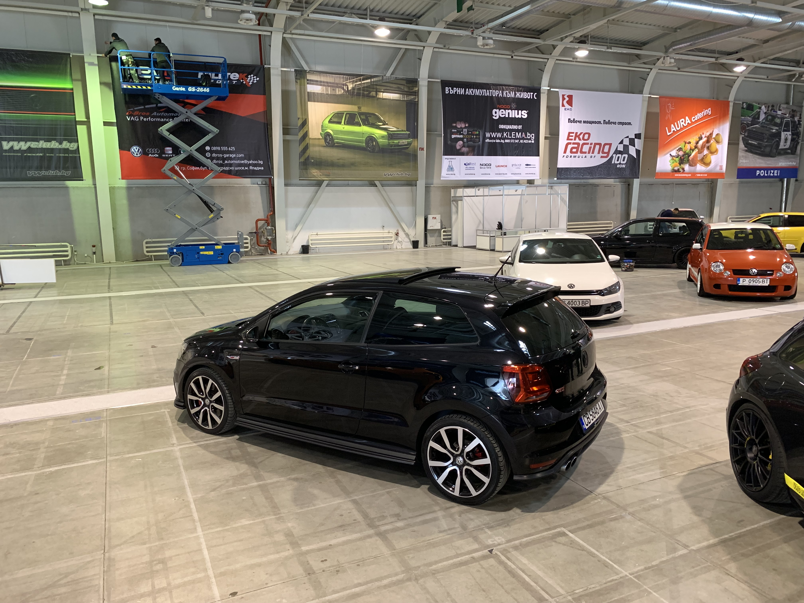
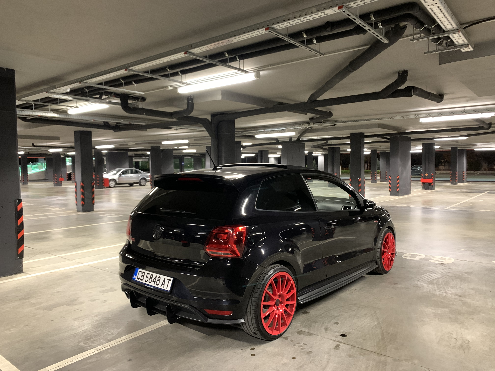
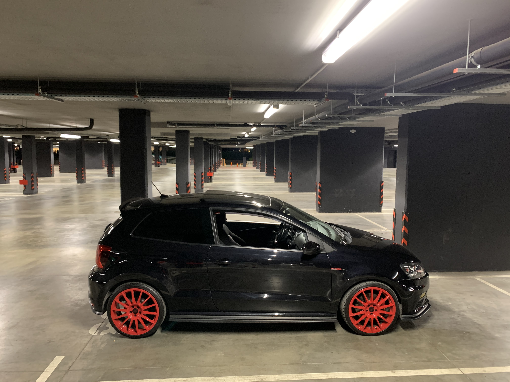
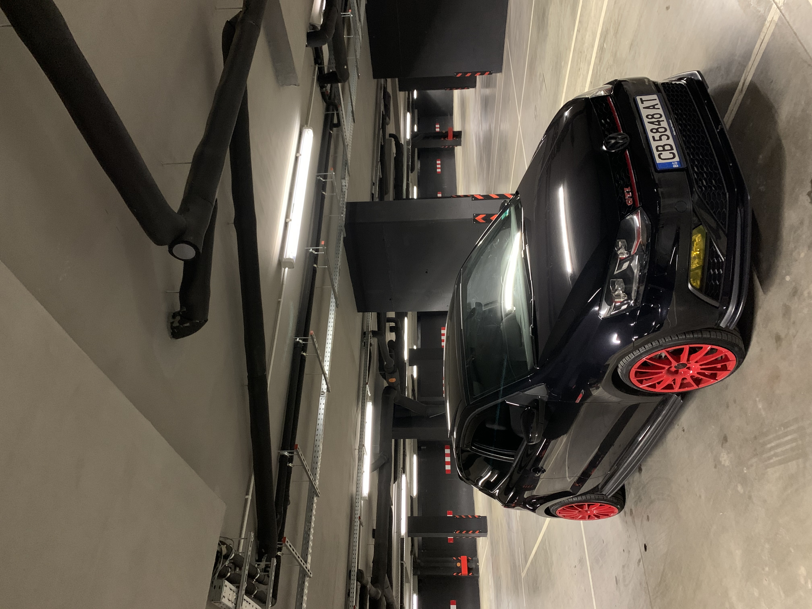
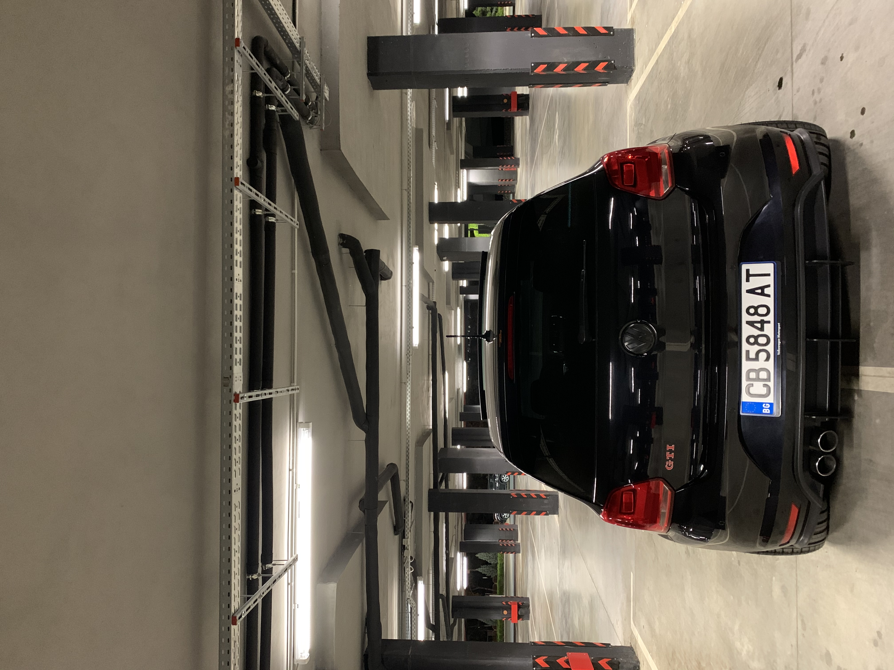
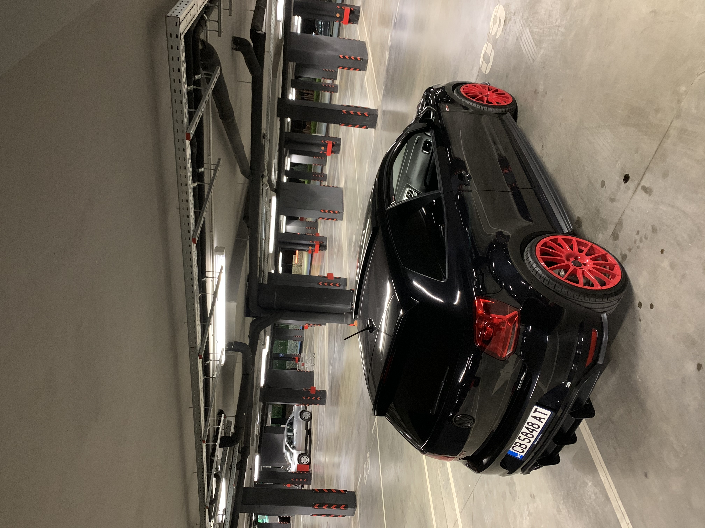
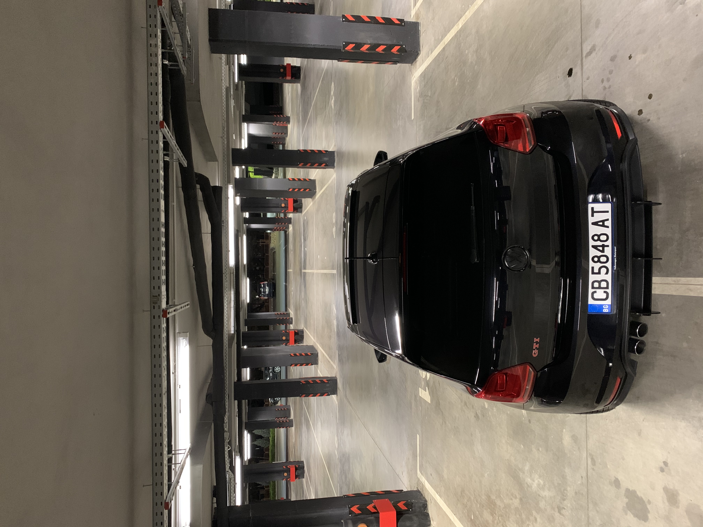

Volkswagen Polo GTI 1.8 TSI
Информация за колата:
Volkswagen Polo GTI 1.8 TSI 192 p.s. 2016
Кубатура:1800
Мощност:192 к.с.
Скоростна кутия:ръчна
Година на производство:23.10.2015
Двигател:Бензинов
Предаване:Предно
Цилиндри:4
Брой врати:2
Ускорение 0-100 км/ч:6.7 сек.
Максимална скорост:250 км/ч
Пълна информация за модела можете да намерите на следния сайт AUTO-DATA.COM
И така...когато я закупих...изглеждаше по следния начин...:


След това страстта и манията станаха още по-дълбоки...и почнах да я доразвивам (предимно на външен вид)...и след време изглеждаше така:






Използвах следните тунинг производители:
Окачване: Eibach
Джанти: Felgenshop
Sound System: HELIX
Exterior Tunning: Maxton Design
Foglights: OSRAM
Badges: Badgeskins
Stickers: Stickers Nation
Sound Isolation: AVAL
Detailing Products: Auto Finesse
Надявам се да Ви хареса този проект...:)